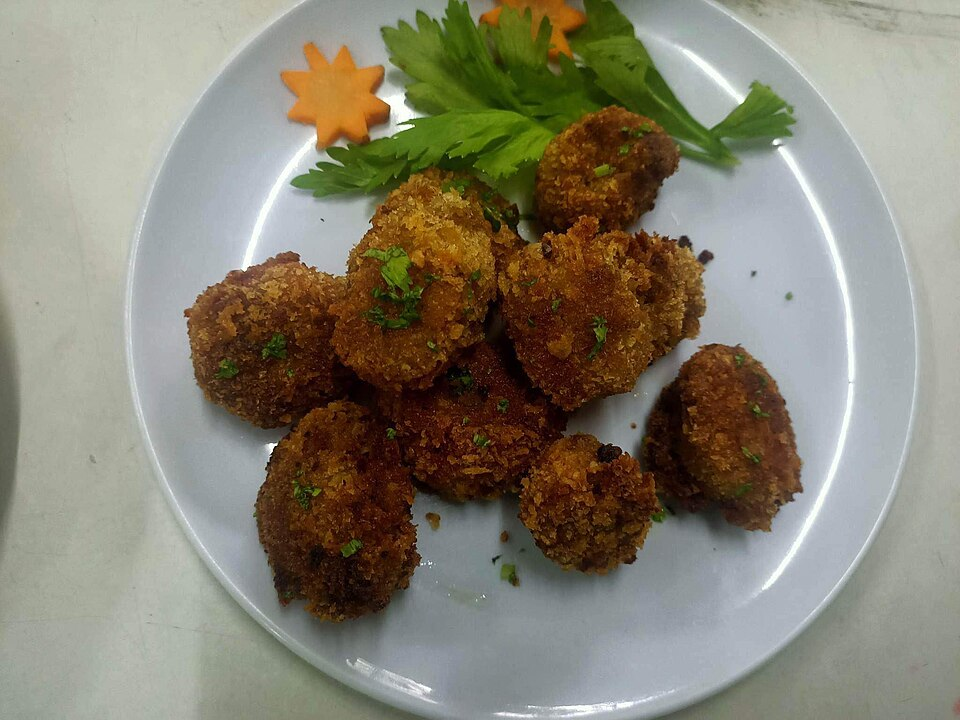

Frutos do mar · Peixes
Croquete de peixe

Ingredientes
- ½ kg de peixe meio moído
- ½ cebola picada
- 2 tomates sem pele
- ½ xícara (chá) de queijo (ralado)
- 2 gemas
- 2 a 4 batatas cozidas e moídas
- 2 colheres (sopa) de farinha
- Pimenta, sal, tempero verde e alho a gosto
- Ovo batido e farinha de rosca para empanar
- Óleo para fritar
Modo de preparo
- Refogue a cebola, o alho e os tomates picados. Misture o peixe e tempere com sal, pimenta e tempero verde.
- Junte as batatas moídas, o queijo, as gemas e a farinha. Amasse até dar liga.
- Modele os croquetes, passe no ovo batido e na farinha de rosca, e frite até dourar.
Observação: a foto só trazia a lista de ingredientes; o preparo foi completado no padrão clássico de croquete (como o de carne da mesma página).